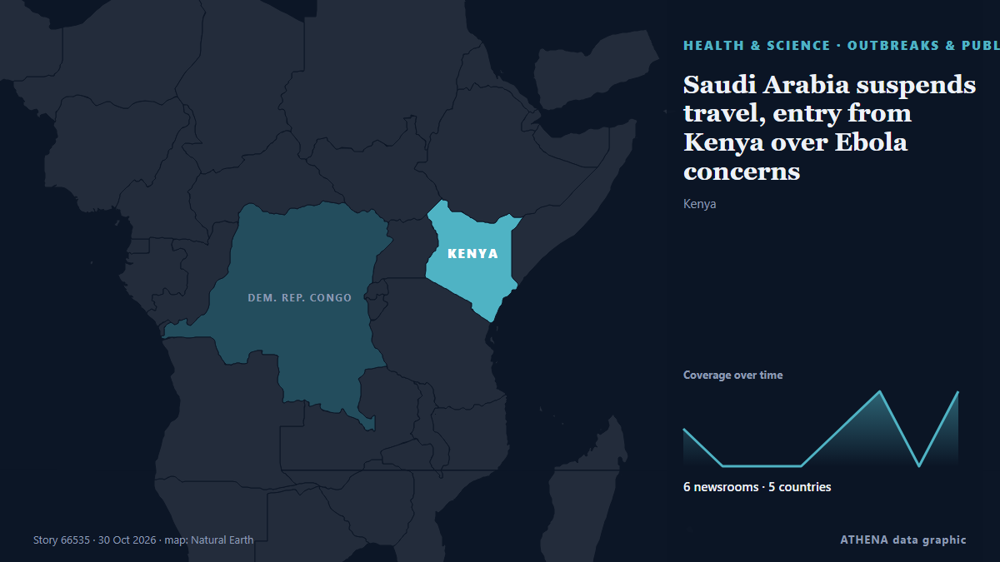

الصحة والعلوم والبحث
تُعرض العناوين بالإنجليزية كما نُشرت.

الأوبئة والصحة العامةSaudi Arabia suspends travel, entry from Kenya over Ebola concerns
Measures include suspension of all visa types and entry restrictions for travelers who stayed in Kenya or Ebola-affected countries within previous 21 days. من Anadolu Agency (English)
| 17 أكتوبر | 29 |
|---|---|
| 18 أكتوبر | 7 |
| 19 أكتوبر | 42 |
| 20 أكتوبر | 19 |
| 21 أكتوبر | 42 |
| 22 أكتوبر | 80 |
| 23 أكتوبر | 79 |
| 24 أكتوبر | 37 |
| 25 أكتوبر | 48 |
| 26 أكتوبر | 82 |
| 27 أكتوبر | 79 |
| 28 أكتوبر | 73 |
| 29 أكتوبر | 68 |
| 30 أكتوبر | 38 |
7 candidates nominated to lead World Health Organization
Selection process to include public forums, executive board interviews before final appointment in May 2027. من Anadolu Agency (English)
Finland sees record number of drug deaths in 2025
The number of drug-related deaths increased across all age groups and genders, but in particular among younger people and women. من Yle News (alternative feed)
Irish government to scope out possibility of unity with Northern Ireland for first time
DUBLIN, Oct 30 - Ireland will set up a government body that would for the first time undertake research and preparations for the possibility of future unity with British-run Northern Ireland, Prime… من The Straits Times
Glenn Phillips ton fuels New Zealand's 87-run demolition of India
New Zealand's Phillips hits sublime century in 87-run win over India. من Gulf News
Martian meteorite found in the Sahara is 4.1 billion years old
A meteorite found in 2022 in the Sahara in Mali formed in the Martian crust at least 4.1 billion years ago, according to scientists, making the reddish igneous rock perhaps the oldest of the 435… من Cyprus Mail
Former world champion boxer Tony Bellew is encouraging people to get a flu jab this winter
New research has found that people are putting it off. من WalesOnline
Parents sue OpenAI over ChatGPT advice to cut daughter’s seizure drug
The parents of a 31-year-old Amazon software engineer have sued OpenAI, alleging that ChatGPT coached their daughter to stop taking her epilepsy medication before she died in February. من The Next Web
Oxygen Cylinder Explodes Inside Ambulance, Killing at Least 10 in Pakistan
Officials say an oxygen cylinder exploded inside a parked ambulance at a government-run medical facility in southern Pakistan, killing at least 10 people, including a patient of the facility. من ABC News (International)
22-year-old arrested after 6.4kg of cannabis seized
A 22-year-old man was arrested in Engomi on Thursday after police seized around 6.4kg of cannabis linked to alleged drug importation and possession with intent to supply. من Cyprus Mail
Everton beat Newcastle to set up League Cup quarter-final with Fleetwood
A look at the changes David Moyes could make to his starting line-up for Thursday's big Carabao Cup fourth-round tie at home to Newcastle United. من Liverpool Echo
Simon Harris rejects ‘characterisation’ of phone call with Patrick O’Donovan
Mr Harris said he has “been clear” that the characterisation of the call “isn’t reflective of the reality” من Irish Mirror
26% of adults have experienced sexual violence - report
Just over a quarter of the population have experienced sexual violence as an adult, according to a report. من RTÉ News
Queensland drive-by shooting update
A victim of the Logan pub drive-by shooting remains in critical condition but in good spirits, his family says. من Sydney Morning Herald
Nigeria: Ebola - How Months of Ebola Preparedness Helped Nigeria Confirm First Case Within 24 Hours - Minister
[Premium Times] Mr Pate described the response as a continuation of Nigeria's experience in managing public health emergencies, recalling how the country contained the Ebola outbreak in 2014. من AllAfrica
Solomon Islands PM sent to Australia for urgent medical treatment
The Solomon Islands prime minister has called for more job opportunities for Solomon Islanders through Australia's Pacific Australia Labour Mobility scheme. من RNZ Pacific
Stroke survivor saved after speaking 'gibberish' on call
A man is urging people to be aware of the stroke symptoms after he was saved by a colleague who noticed he was speaking "complete gibberish" on a work call. من RTÉ News
Salmonella Outbreak Hits Costa Rica Hospital
Costa Rica’s health ministry is investigating 66 suspected salmonella cases among Hospital CIMA staff in Escazú, and the US Embassy issued a health alert. من The Rio Times
Kyrgyzstan performs 116 kidney transplants and 11 liver transplants
Kyrgyzstan has performed 116 kidney transplants and 11 liver transplants, Deputy Health Minister Nurbek Bukuev said on October 26 at a meeting of the Zhogorku… من 24.kg (English)
Fiji opens Pacific digital skills hub, with Australia pledging $28 million
FIJI has opened a new digital skills hub at the University of the South Pacific, aiming to train workers in artificial intelligence... من Islands Business (Fiji)
DR Congo: A centre celebrates the discharge of last Ebola patients
Medical staff and residents at a treatment centre in Ituri danced and sang to celebrate a first since May: the centre is no longer treating any confirmed Ebola cases. من France 24 English
Africa Ebola outbreak passes 10,000 cases, mostly in DR Congo
Africa's latest outbreak of Ebola has passed 10,000 confirmed cases, the vast majority of them in the Democratic Republic of Congo, the Congolese health authorities said on Tuesday, with almost 5,000… من The Korea Times
Greece Strengthens National Addiction Services with 243 Facilities
Greece is strengthening addiction prevention and recovery through 243 facilities, new support services and expanded European cooperation, Deputy Health Minister Eirini Agapidaki says. من Greek City Times
Congo-Kinshasa: Cases Top 10,000 in DR Congo Ebola Outbreak
The Democratic Republic of Congo is battling its deadliest outbreak of Ebola, caused by a rare strain with no approved treatment. من CBC News
Antarctic Sea Ice Decline Is Triggering Global Ocean Changes
The rapid decline of Antarctic sea ice since 2016 has triggered a dramatic shift in a crucial part of Earth’s climate system, scientists say. من Inside Climate News
Without electricity, food or medicine – civilian evacuation planned in Russian-occupied Oleshky
A temporary ceasefire is allowing preparations to evacuate civilians from Russian-occupied Oleshky amid severe humanitarian shortages. من Baltic News Network
Tomosynthesis detects breast cancer more frequently during screening
With around 75,000 new cases per year, breast cancer is by far the most common cancer among women in Germany. من Medical Xpress
Possible new dwarf planet identified orbiting beyond Pluto
WASHINGTON, Oct 28 - Scientists using a Chile-based telescope have identified an icy object orbiting beyond Pluto that may join our solar system's small roster of dwarf planets. من The Straits Times
Polyclinic seminar highlights breast cancer early detection
Early detection is key in fighting breast cancer; hence why it’s so important to go for regular screenings or mammograms. من The Local Spain
New Zealand's former PM, Jacinda Ardern, to teach leadership at Sydney university
Former New Zealand prime minister Jacinda Ardern will teach students about "empathetic leadership" after being hired for a new job at the University of Sydney. من VnExpress International
France reports first human Shamonda virus case
PARIS: French health authorities said they had detected the Shamonda virus usually affecting livestock in a human for the first time in a patient who later died, while adding t... من Oman Observer
Xhaka, Embolo return to Swiss squad after fake COVID docs affair
Granit Xhaka and Breel Embolo's return to Switzerland 'the right course of action,' national team director says. من Al Jazeera English
Google’s Genie 4 world model adds audio, more realistic worlds, and real-time steering
Genie 4 can maintain a consistent scene for up to two minutes, double Genie 3's limit, and offers better physics and more humanlike characters. من TechCrunch
U.S. measles cases more than double what they were last year as outbreak spreads
Pennsylvania is the worst hit state, with at least 1,338 cases of measles confirmed in 44 counties so far this year, according to the Pennsylvania Department of Health. من NPR
Kenya: Specialised Rescue Team Deployed to Eastleigh Building Collapse
[Capital FM] Nairobi -- The Kenya Defence Forces (KDF) has deployed specialised rescue teams, canine units and equipment to support ongoing efforts to locate survivors following the collapse of a… من AllAfrica